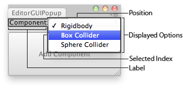

EditorGUI.Popup
public static int Popup(Rect position,
int selectedIndex,
string[] displayedOptions,
GUIStyle style = EditorStyles.popup);
public static int Popup(Rect position,
int selectedIndex,
GUIContent[] displayedOptions,
GUIStyle style = EditorStyles.popup);
public static int Popup(Rect position,
string label,
int selectedIndex,
string[] displayedOptions,
GUIStyle style = EditorStyles.popup);
public static int Popup(Rect position,
GUIContent label,
int selectedIndex,
GUIContent[] displayedOptions,
GUIStyle style = EditorStyles.popup);
Parameters
| position | Rectangle on the screen to use for the field. | |
| label | Optional label in front of the field. | |
| selectedIndex | The index of the option the field shows. | |
| displayedOptions | An array with the options shown in the popup. | |
| style | Optional GUIStyle. |
Returns
int The index of the option that has been selected by the user.
Description 描述
Makes a generic popup selection field.
Takes the currently selected index as a parameter and returns the index selected by the user.

Popup in and Editor Window.
using UnityEngine; using UnityEditor;
// Adds a component to the selected GameObjects
class EditorGUIPopup : EditorWindow { string[] options = { "Rigidbody", "Box Collider", "Sphere Collider" }; int index = 0;
[MenuItem("Examples/Editor GUI Popup usage")] static void Init() { var window = GetWindow<EditorGUIPopup>(); window.position = new Rect(0, 0, 180, 80); window.Show(); }
void OnGUI() { index = EditorGUI.Popup( new Rect(0, 0, position.width, 20), "Component:", index, options);
if (GUI.Button(new Rect(0, 25, position.width, position.height - 26), "Add Component")) AddComponentToObjects(); }
void AddComponentToObjects() { if (!Selection.activeGameObject) { Debug.LogError("Please select at least one GameObject first"); return; }
foreach (GameObject obj in Selection.gameObjects) { switch (index) { case 0: obj.AddComponent<Rigidbody>(); break;
case 1: obj.AddComponent<BoxCollider>(); break;
case 2: obj.AddComponent<SphereCollider>(); break; } } } }
Note: The displayedOptions lists an array of options. When these elements contain "/" (slash characters) the elements are use for sub-menus. The text to the left of the slashes determines the structure.